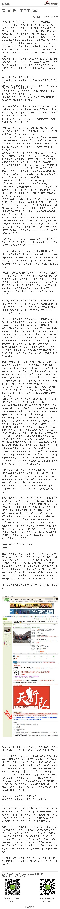

之前针对驴友团的领队角色，刚写过一篇“社区里的志愿者与专业人员 ”网页链接 我当时的看法是，我会更愿意选择带有商业诉求的专业组织者。但商业的lvye.cn频频出事，而公益的非营利的lvye.org中的领队却相对专业，这是怎么一回事呢？难道急功近利的商业就是会侵蚀专业吗？@我是壁虎先森:“杀人于无形的除了坏气候，还有什么？”——灵山山难，不得不说的。关于户外、关于绿野、关于领队，关于不该陨落的那些生命。@北京厨子 @北京天文馆詹想 @十一郞 @Vihike @驴友圈 @Oo骑行侠oO @小菲好同学 @辽宁-驴行天涯 网页链接 

 网页链接 我当时的看法是，我会更愿意选择带有商业诉求的专业组织者。但商业的lvye.cn频频出事，而公益的非营利的lvye.org中的领队却相对专业，这是怎么一回事呢？难道急功近利的商业就是会侵蚀专业吗？
网页链接 我当时的看法是，我会更愿意选择带有商业诉求的专业组织者。但商业的lvye.cn频频出事，而公益的非营利的lvye.org中的领队却相对专业，这是怎么一回事呢？难道急功近利的商业就是会侵蚀专业吗？